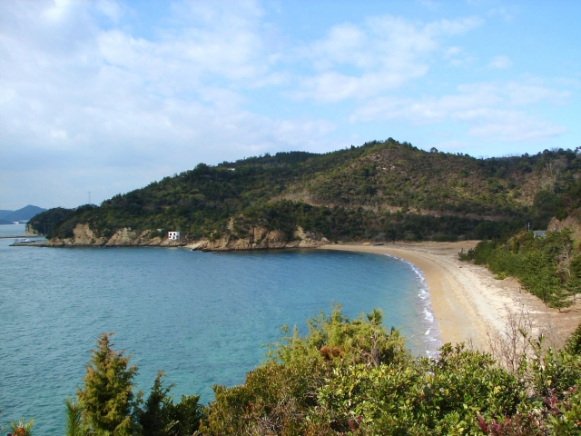
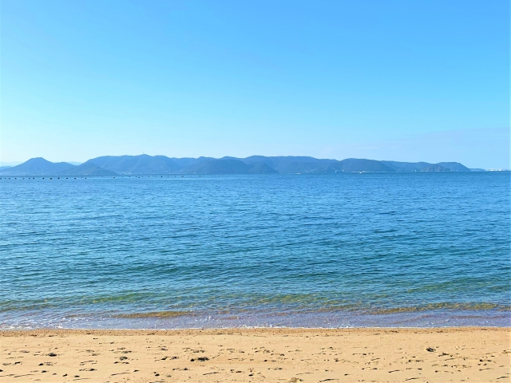
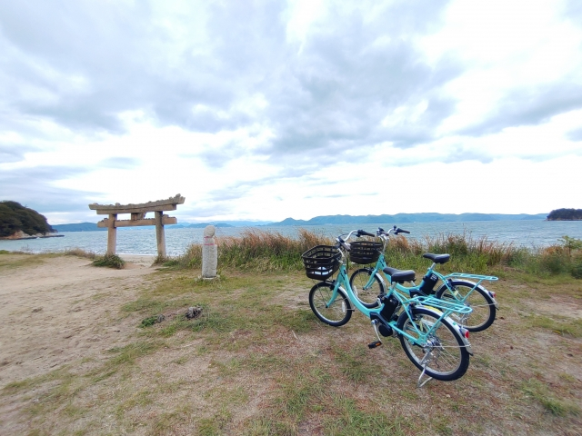

プロフィール
直島
nao shima
公式リンク
直島
nao shima
アートと自然が息づく島
瀬戸内海に浮かぶ直島は、美しい自然と一体化した現代アートの島です。
安藤忠雄氏の建築や草間彌生氏の「南瓜」など、ここでしか体験できないアート作品が点在し、穏やかな潮風を感じながら、心ゆくまで芸術と絶景に浸る、特別な時間を過ごせます。
また、ゲームやアニメの聖地にもなっており、その舞台となった場所をを実際に見て回る聖地巡礼に訪れるファンも多く訪れています。
| 所在地 | 香川県香川郡直島町 |
|---|---|
| 面積 | 約7.82㎦ |
| 人口 | 約2,900人 |
| 主なアクセス | 高松港／宇野港からフェリー |
| 産業 | 観光・製錬・漁業 |
|---|---|
| 周囲 | 約28 km |
| 滞在目安 | 日帰り／1泊2日 |
| 交通手段 | 自転車、バス、タクシー、徒歩 |
- 
- 
- 
魅力
アートの島
直島は、瀬戸内海の美しい自然の中に現代アートが溶け込む「アートの聖地」です。
安藤忠雄氏設計の地中美術館では、自然光の中で作品が刻々と表情を変え、見るたびに新たな感動が生まれます。また、港のシンボル草間彌生氏の「赤かぼちゃ」や、古い集落に点在する家プロジェクトなど、島全体が美術館。屋外作品や、五感で体験できるアートを通じて、非日常の空間と自然が織りなす特別な魅力を存分にお楽しみいただけます。
アートと共生する体験型施設
直島のアートは、ただ見るだけでなく「体験する」ことを重視しています。
直島銭湯「I♥湯」のように実際に入れるアート作品や、特定の時間帯にしか見られない光の作品など、五感を刺激される体験が待っています。
豊かな自然
直島の魅力は、アートだけではありません。
瀬戸内海の穏やかな自然が、訪れる人々を優しく包み込みます。多島美が織りなす絶景、青い空と海、そして心地よい潮風は、日々の喧騒を忘れさせてくれるでしょう。アート作品が島の風景と一体化することで、自然そのものがアートの一部のように感じられます。散策やサイクリングで、心安らぐ直島ならではの自然の美しさを存分に体感してください。
アートと息づく日常
直島は、国際的なアートの島でありながら、昔ながらの集落や人々の暮らしが息づいています。アートと日常が共存する独特の時間の流れは、訪れる人に安らぎを与えてくれます。地元の人との触れ合いや、島の小さなカフェやお店でのひとときも、旅の素敵な思い出になるでしょう。
おすすめ動画
公式リンク
アクセス
| 出発港 | 到着港 | 所要時間 | 備考 |
|---|---|---|---|
| 高松港 | 直島（宮浦港） | フェリー：約60分 高速船：約30分 |
フェリーと高速船の選択可 |
| 宇野港 | 直島（本村港） | 約20分 | 定期便あり |
| 宝伝港 | 犬島港 | 約10分 |
更新履歴
サイトを公開しました